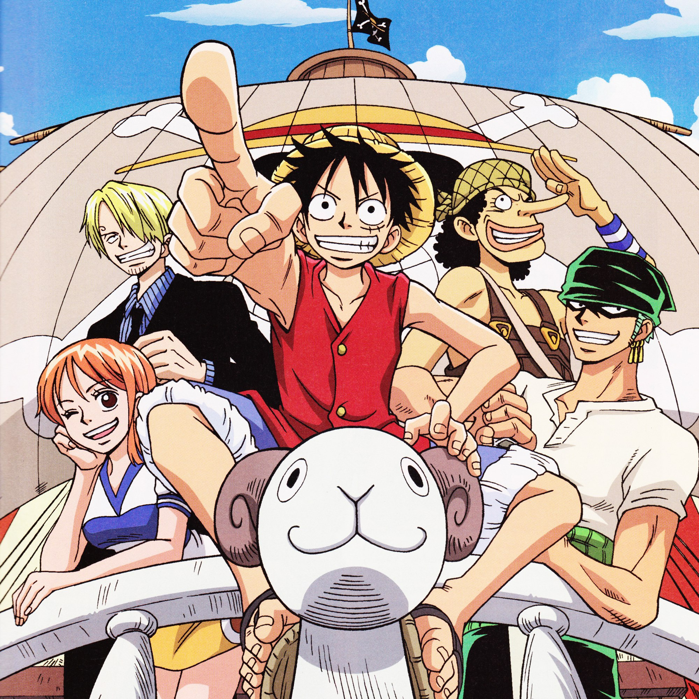

Вторая причина
Персонажи. Не смотря на то, что персонажей много,
все ключевые персонажи имеют свою хорошо
прописанную историю и развитие по ходу сюжета.
Очень захватывающе наблюдать за тем, как они
становятся сильнее, крепнут духом и идут к своей
цели. Даже когда очень тяжело, даже когда загнаны
в угол и казалось бы выхода нет, они продолжают
бороться. Каждый из них борется за то, что для них
важно. Пусть их цель велика и сложнодостижима они
и не думают отступать.
